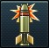

War Thunder
War Thunder — комп'ютерна розрахована на багато користувачів онлайн-гра з елементами симулятора, присвячена бойовій авіації, бойовим гелікоптерам, бронетехніці та флоту довоєнного періоду, а також Другої світової війни та після воєнного періоду. Проект розробляється та видається компанією Gaijin Entertainment.
Игровий процесс
War Thunder присвячена боям у повітрі, на суші та на морі, при цьому наземна, повітряна чи морська техніка можуть боротися разом, в одній ігровій сесії. У грі відтворено техніку XX і XXI століття: військово-морські кораблі часів Першої світової війни, техніка міжвоєнного періоду та часів громадянської війни в Іспанії, Другої Світової війни, війни у В'єтнамі, Холодної війни, війни в Іраку та сучасних конфліктів. Гравці можуть управляти літаками, наземною технікою та військовими кораблями СРСР, Німеччини, США, Великобританії та Японії, а також країн з меншими збройними силами або менш помітними у конфліктах, таких як Італія, Франція, Китай, Швеція, ПАР та Ізраїль. Транспортні засоби діляться на три основні категорії: авіація, наземний транспорт та флот, а ігрові режими поділяються на аркадний, реалістичний та симуляторний. Авіація ділиться на літаки та вертольоти, а флот ділиться між Великим та малим, де Великий представляє кораблі розміром від есмінців до лінкорів та лінійних крейсерів, а малий – це невеликі кораблі, такі як торпедні катери, моторні канонерські човни, морські мисливці та фрегати. Також доступний однокористувацький режим, в якому основна увага приділяється історичним битвам, а також кооперативний режим для битв із наземною технікою та літаками.
Легендарна техніка


Влаштування снарядів
| Бронебійний каморний снаряд |
  У каморних снарядів усередині є спеціальна порожнина - камора,
в якій знаходиться вибухова речовина. Коли такий снаряд пробиває броню, спрацьовує підривник і вибухає.
Екіпаж ворожого танка уражається не лише осколками від броні, а й вибухом та уламками каморного снаряда. У каморних снарядів усередині є спеціальна порожнина - камора,
в якій знаходиться вибухова речовина. Коли такий снаряд пробиває броню, спрацьовує підривник і вибухає.
Екіпаж ворожого танка уражається не лише осколками від броні, а й вибухом та уламками каморного снаряда.
|
|
| Бронебійний суцільний снаряд |
 |
|
| Уламково-фугасний снаряд |
  Осколково-фугасний снаряд є тонкостінним сталевим або чавунним снарядом, заповненим вибуховою речовиною
(зазвичай тротилом чи амонітом), з головним підривником.
При попаданні в ціль снаряд відразу ж вибухає, вражаючи ціль осколками та вибуховою хвилею. У порівнянні з бетонобійними та бронебійними каморними снарядами у осколково-фугасних снарядів дуже тонкі стінки,
зате більше вибухової речовини. Осколково-фугасний снаряд є тонкостінним сталевим або чавунним снарядом, заповненим вибуховою речовиною
(зазвичай тротилом чи амонітом), з головним підривником.
При попаданні в ціль снаряд відразу ж вибухає, вражаючи ціль осколками та вибуховою хвилею. У порівнянні з бетонобійними та бронебійними каморними снарядами у осколково-фугасних снарядів дуже тонкі стінки,
зате більше вибухової речовини. |
|
| Котушкові підкаліберні снаряди |
 |
|
| Підкаліберний снаряд з відокремлюючися піддоном. |
У підкаліберних снарядів з піддоном, що відокремлюється, замість корпусу використовувався піддон, що відокремлюється.
який спочатку розганяв снаряд у стволі зброї,
а потім відокремлювався від осердя опором повітря.
Сердечник летів до мети без піддону і завдяки значно меншому аеродинамічному опору не так швидко втрачав бронепробити на відстані,
як котушкові підкаліберні снаряди.
|
|
|---|---|---|
| Бронебійний фугасний снаряд |
Бронебійно-фугасний снаряд - післявоєнний тип протитанкового снаряда,
принцип роботи якого заснований на підриві пластичного вибухового речовини на поверхні броні,
що викликає відколювання уламків броні на тильній стороні та ураження ними бойового відділення машини.
|
|
| Кумулятивний необертаючийся снаряд |
 На відміну від ранніх кумулятивних снарядів вони стабілізуються в польоті не обертанням, а за допомогою складного оперення.
Відсутність обертання покращує формування кумулятивного струменя і суттєво збільшує бронепробивність,
при цьому знімаючи всі обмеження швидкості польоту снаряда, яка може перевищувати 1000 м/с. На відміну від ранніх кумулятивних снарядів вони стабілізуються в польоті не обертанням, а за допомогою складного оперення.
Відсутність обертання покращує формування кумулятивного струменя і суттєво збільшує бронепробивність,
при цьому знімаючи всі обмеження швидкості польоту снаряда, яка може перевищувати 1000 м/с. |
|
| Протитанкові керовані ракети (ПТРК) |

 ПТРК у грі являють собою твердопаливні ракети,
оснащені бортовими системами управління (працюючими за командами оператора) та стабілізації польоту,
пристроями прийому та дешифрування керуючих сигналів,
одержуваних по проводах (або інфрачервоним або радіокомандним каналами управління). ПТРК у грі являють собою твердопаливні ракети,
оснащені бортовими системами управління (працюючими за командами оператора) та стабілізації польоту,
пристроями прийому та дешифрування керуючих сигналів,
одержуваних по проводах (або інфрачервоним або радіокомандним каналами управління). |
|
| ПТРК Тандем |
  Снаряд і двох зарядів, розміщених послідовно.
Заряд, розміщений у головній частині, називається лідируючим, а в хвостовій — основним.
Фактично, це дві розташовані один за одним звичайні кумулятивні бойові частини.
Відбувається послідовне формування двох кумулятивних струменів, тим самим збільшується бронепробивність Снаряд і двох зарядів, розміщених послідовно.
Заряд, розміщений у головній частині, називається лідируючим, а в хвостовій — основним.
Фактично, це дві розташовані один за одним звичайні кумулятивні бойові частини.
Відбувається послідовне формування двох кумулятивних струменів, тим самим збільшується бронепробивність |
|
| Підкаліберні оперені снаряди |  |